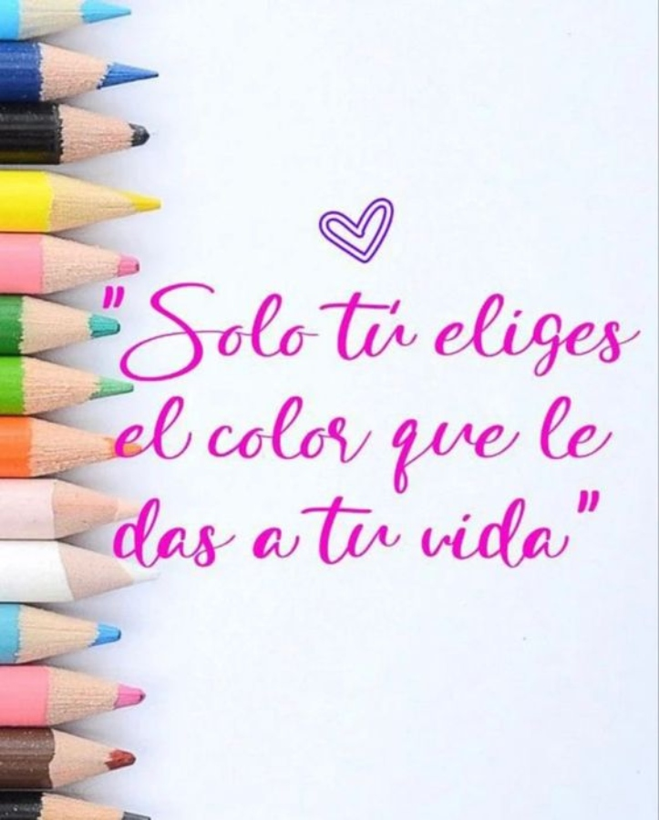

La vida es un lienzo en blanco; llena cada día con colores vibrantes y pinceladas de amor.
La vida es un lienzo en blanco, extendiéndose ante nosotros como un vasto horizonte de posibilidades. Cada día, tomamos el pincel de nuestras acciones y emociones, y con colores vibrantes y pinceladas de amor, creamos nuestra propia obra maestra. En los días soleados, pintamos con tonos dorados de risas compartidas, abrazos cálidos y momentos de felicidad. Los azules profundos representan los desafíos que enfrentamos: las tormentas que nos fortalecen y las lágrimas que lavan el lienzo, preparándolo para nuevas creaciones. El rojo apasionado se manifiesta en los momentos de amor y pasión: los besos robados, las manos entrelazadas y los corazones que laten al unísono. Y cuando la tristeza se cierne como una nube gris, añadimos matices grises y negros, recordando que incluso en la oscuridad, hay belleza y aprendizaje. Nuestros errores y arrepentimientos también encuentran su lugar en este lienzo. Los cubrimos con tonos suaves de perdón y comprensión, transformándolos en lecciones valiosas. Y cuando la soledad amenaza con invadir, trazamos líneas de amistad y conexiones humanas, llenando el espacio con colores cálidos y esperanza. Así es como vivimos: creando, borrando, mezclando y reinventando. No hay límites para nuestra creatividad en este lienzo de vida. Y cuando llegue el momento de cerrar los ojos por última vez, esperamos que nuestra obra maestra sea una que inspire, consuele y deje una huella de amor en el mundo."
